NanoGPT Speedrunning
tldr: two speedrun submissions — a test-time training run that ended up in notable runs, and a Triton transpose kernel that was accepted as an official record.

The benchmark
The NanoGPT speedrun is a public competition to train a small GPT-2 variant on FineWeb-Edu as fast as possible. The rules are simple: reach a target validation loss of 3.28 on FineWeb, report wall-clock time on a single 8xH100 node. Everything else — architecture, optimizer, learning rate schedule, kernel implementations — is fair game.
I like this benchmark because it is a clean implementation of graduate student descent. It also let's you do research with a quick feedback loop, and just like for real ML problems, the compounding small optimizations matter as much as the big ideas.
My goal with this challenge was to try to get a world record in two ways: an algorithmic improvement (add something new) and a new kernel (making something fast).
Test-time training
PR #205 was my attempt to improve the leaderboard by changing validation rather than training. The core idea: before predicting P(token | context) on a validation sequence, spend a tiny bit of compute updating the model on the context itself.
The TTT eval loop: for each chunk, score first, then train. The model resets between sequences. (thank claude for figure)
Test-time training was originally proposed by Sun et al. as a way to adapt models to distribution shifts at inference time by optimizing a self-supervised objective on each test input. The core insight — that you can keep learning after deployment, on the input itself — turns out to be especially useful for language models dealing with long contexts. Recent work by Bansal et al. (2025) formalizes why: standard self-attention suffers from score dilution, where the attention mass on a relevant token vanishes as the context grows, and they show that adapting the query projections at test time directly counteracts this by increasing the target-distractor logit margin. Generating more "thinking" tokens with fixed weights can't fix this — you need to actually move the queries toward the right keys.
Given the relatively small dataset size (< 400m tokens), the validation set is more out-of-distribution than for big pretraining runs. TTT was motivated by distribution shifts, and increased test-time compute was explicitly allowed by the competition, so this was a clear fit.
There's also a concrete context-length mismatch in this benchmark. Over a third of FineWeb validation sequences are longer than the longest sliding window during training (1664 tokens, covering ~20% of tokens), and over a quarter are longer than the longest window during validation (2560 tokens, ~13% of tokens). For those ~13% of tokens, the model simply isn't conditioning on part of the sequence. Through TTT, we can encode the information of the entire context into the model's weights without any extra training cost.
My PR applies the simplest version of TTT: don't change the training procedure at all, just adapt the model to each validation sequence before scoring it. The sequence is broken into chunks; for each chunk, we first evaluate loss (before any gradient update touches those tokens), then train on the chunk to improve predictions for subsequent chunks. The model resets between sequences, so there's no leakage.
The eval-time loop looks roughly like this:
for seq in val_sequences:
model.load_state_dict(checkpoint) # reset for each sequence
optimizer.reset()
for i in range(num_chunks):
chunk = seq[i * chunk_size : (i+1) * chunk_size]
# 1. evaluate loss on this chunk (before any TTT update uses these tokens)
val_loss += model(seq[:chunk_end], mask=chunk_only)
# 2. train on the chunk to help with future chunks
loss = model(chunk)
loss.backward()
optimizer.step() # adam only, muon params frozenThe key detail is that loss on each chunk is computed before training on it — so TTT never scores tokens it has already optimized for. The model and optimizer reset between sequences, so there's no information leaking between validation examples or back into the training weights.
One important implementation detail: only Adam parameters are updated during TTT; the NorMuon parameters (the main weight matrices) are frozen. Updating them led to instability. This makes sense: NorMuon normalizes each update to a fixed norm regardless of gradient magnitude, which is fine during training where gradients are averaged over ~50k tokens per GPU. During TTT, gradients come from a single chunk of ~512 tokens. NorMuon doesn't know the difference — it applies the same-magnitude update either way, massively overshooting relative to the actual signal. Adam is better behaved here because the update magnitude scales naturally with the gradient.
this does not change training, but increases the validation performance of a given checkpoint, allowing us to train for less time to reach our target loss.
The result was a 95.9s run, cutting the step count from 1600 to 1570 while still reaching the target loss.
losses = [3.2766, 3.2791, 3.2773, 3.2773, 3.2777]
times = [95.739, 95.693, 95.760, 95.583, 95.683]
mean loss = 3.2776
mean time = 95.6916sInterestingly, you can show that TTT does in fact help the most on later positions: reinforcing our intuition that the loss in later positions can be aided by adding context in the weights.
Why it became a notable run
This one -- although decreasing the time by 3.4s -- was not added to the official track because the implementation made eval ~5' instead of a few seconds, which makes development slower.
Backward transpose kernel
PR #240 was a very different kind of submission. Instead of changing the evaluation procedure, I sped up a hot path in the backward pass of FusedSoftcappedCrossEntropy.

.T.contiguous() uses strided column reads; the Triton kernel reads/writes coalesced tiles via shared memory. (thank claude for figure)The bottleneck
The loss function's backward pass needs to compute a weight gradient via an FP8 matmul. To get the input tensor into the right layout, the existing code called .T.contiguous() — a transpose followed by a contiguous copy. PyTorch dispatches this as a generic elementwise copy kernel, which is memory-bandwidth-bound and doesn't exploit the block structure of the tensor.
For the matrix sizes in this model, that copy was surprisingly expensive: it runs once per backward pass, on a tensor that's (vocab_size, hidden_dim) = (50257, 768), and it shows up clearly in an nsight profile.
The fix
I replaced the generic copy with a custom Triton tiled transpose-copy kernel that reads and writes in coalesced blocks:
# Before: generic PyTorch copy
grad_weight_input = activation.T.contiguous() # elementwise copy kernel
# After: fused Triton transpose-copy
@triton.jit
def tiled_transpose_kernel(
input_ptr, output_ptr,
M, N,
BLOCK_M: tl.constexpr, BLOCK_N: tl.constexpr,
):
pid_m = tl.program_id(0)
pid_n = tl.program_id(1)
offs_m = pid_m * BLOCK_M + tl.arange(0, BLOCK_M)
offs_n = pid_n * BLOCK_N + tl.arange(0, BLOCK_N)
# load a BLOCK_M x BLOCK_N tile from input[offs_m, offs_n]
mask = (offs_m[:, None] < M) & (offs_n[None, :] < N)
tile = tl.load(input_ptr + offs_m[:, None] * N + offs_n[None, :], mask=mask)
# store as BLOCK_N x BLOCK_M tile in output[offs_n, offs_m]
tl.store(output_ptr + offs_n[:, None] * M + offs_m[None, :], tile.T, mask=mask.T)
grad_weight_input = tiled_transpose(activation, BLOCK_M=64, BLOCK_N=128)The Triton kernel reads a tile from the input in row-major order, transposes it in shared memory, and writes it out in the transposed layout — all in coalesced accesses. The tile size was tuned from the initial 32x32 to 64x128 with 8 warps to better match the H100's memory hierarchy.
The PR also included a practical fix: casting pointer offsets to int64 for larger matrices where int32 offsets would overflow.
Results
Baseline mean time = 88.3765s
This PR mean time = 87.9355s
Delta -0.4410s
stage 1: 0.769 ms -> 0.588 ms 1.31x
stage 2: 1.451 ms -> 1.179 ms 1.23x
stage 3: 2.170 ms -> 1.768 ms 1.23xNext steps
I'm a bit bummed that the TTT wasn't accepted. Based on work like ALoRA, I think I can make a batchified system with per-sequence LoRAs: making the evaluation *much* faster. Similarly, based on works like the original TTT paper, I'm interested in building in the test-time optimization *into the architecture*. Generally, I want to explore this avenue of reasoning-as-optimization.
But, this was a weekend project, H100s are expensive, so I likely won't explore this on this benchmark.